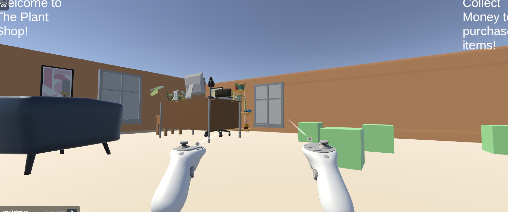

Your First XR Experience

Description
For this assignment, I created my first mixed reality (XR) experience using Unity, called Yoiur First XR Experience! The goal of this was to create an interactive experience between the player and objects and how they respond to one another in the game system using mixed reality. We were required to make a few personal modifications, so I made the theme of my experience a plant shop. The user can walk around and collect money to buy things!
Three Key Takeaways
What was Easiest?
I felt that making the material and writing the code in C# was the easiest. Making the material was very simple but also as a CS major I am familiar with coding practices that make navigating between languages simple.
What was Hardest?
I felt that modifying and getting the right behvior of the objects was the hardest part of the assignment. This is because getting the objects to behave correctly in a mixed reality environment requires careful attention to both the Unity settings and the C# scripts controlling the interactions and perfecting those were difficult.
Environment, Trigger Placement, and Player Guidance
Environment: Refers to the overall setting and layout of the XR experience, including the spatial arrangement and interactive elements.
Trigger Placement: Refers to the strategic positioning of triggers within the XR environment to facilitate interactions and events.
Player Guidance: Refers to the design elements and cues within the XR environment that help guide the player's actions and interactions.
Connecting to My XR Documentary
How These Skills Will Help
The skills from this assignment, like using text and spatial awareness, will help me create my XR documentary because it will make the documentary more engaging and interactive. This will ultimately help me tell a better narrative. As a result, the audience will have a more immersive and engaging experience.
Ways I Could Use Unity for My Documentary
I could use Unity to create a scene thats important to the resident and make them interactive. This would allow the audience to engage with the environment and better understand the resident's story.
How Interactivity Enhances Storytelling
Interactivity can make a documentary stronger because it gives the audience an opportunity to interact with the space and feel immersed in the experience. The mixed reality aspect allows for a deeper connection to the narrative, making the storytelling more impactful.